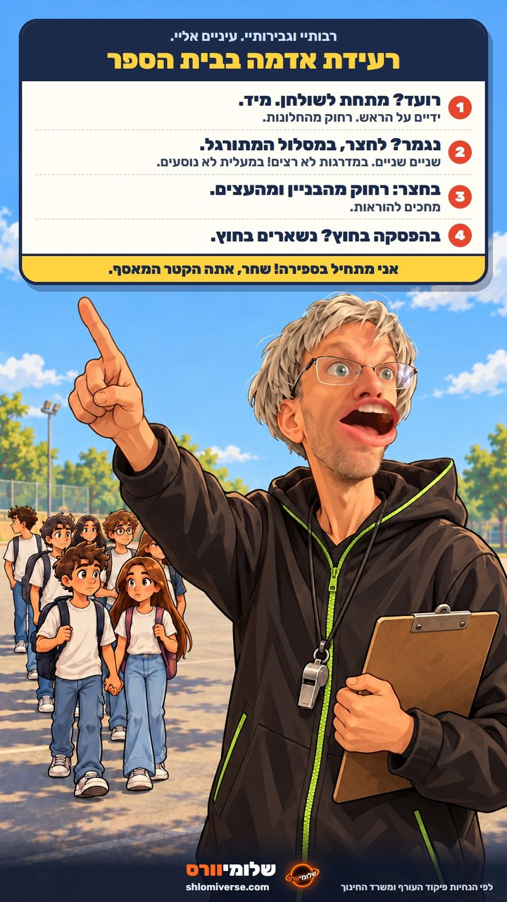

1111/26
הנחיות לרעידת אדמה
בעקבות רעידות האדמה שהורגשו בישראל, המורה רוזנבלום ריכז את ההנחיות לתלמידים. לקריאת ההנחיות

בעקבות רעידות האדמה שהורגשו אתמול והיום, ריכזנו לתלמידים את ההנחיות לפעולה בבית הספר.
לקריאת ההנחיותהיום יתקיים תרגיל ירידה למרחב מוגן בהתאם להנחיות פיקוד העורף.
לקריאת ההנחיות המלאותהכדור שנמצא לאחר התרגיל נשמר אצל המורה רוזנבלום.
שחר, נא לשוב לכיתה יא'2 עם סיום הטיפול במרחב המוגן.
ערב הורים יתקיים בין השעות 17:00-20:00. המפגשים ייערכו עם מחנכי הכיתות, בהרשמה מראש דרך המזכירות.

תלמידות ותלמידים יקרים, הורים יקרים,
סדר, אחריות והקשבה להנחיות הם יסוד להתנהלות בטוחה ומכבדת בבית הספר. כל תלמיד ותלמידה נדרשים להכיר את הנהלים ולפעול לפיהם באופן מלא.
תרגיל הירידה למרחב המוגן נועד לוודא כי כולנו יודעים כיצד לפעול בעת צורך. במהלך התרגיל נדרשת דממה. לא צליל ולא תזוזה, עד להשלמת הספירה וקבלת הנחיה להמשך.
אני מצפה מכלל תלמידי בית הספר לגלות בגרות, אחריות והתחשבות. במקרים שבהם נדרשת התערבות, הנהלת בית הספר תטפל בכך בהתאם.
בעקבות רעידות האדמה שהורגשו בישראל, המורה רוזנבלום ריכז את ההנחיות לתלמידים. לקריאת ההנחיות
ערב ההורים יתקיים ביום שני בין השעות 17:00-20:00. המפגשים יאפשרו שיח משותף על התקדמות התלמידים והמשך השנה.
נבחרת בית הספר ניצחה בטורניר הבין-בתי ספרי האזורי. אנו מברכים את חברי הנבחרת ואת צוות החינוך הגופני.
במהלך השבוע התקיימו מפגשי תגבור, סדנאות למידה ומענה אישי לתלמידי שכבת י"ב לקראת בחינות הבגרות.
קהילת בית הספר קיימה טקס זיכרון שעסק באחריות אזרחית, בכבוד הדדי ובחשיבותו של שיח מכבד.
תלמידי שכבת י' יצאו לטיול שנתי בן יומיים. במהלך הטיול הודגשו ערכי אחריות, היכרות עם הארץ ועבודת צוות.
המקיף נווה תדהר הוא תיכון מקיף לכיתות י'-י"ב, המעניק לתלמידיו מסגרת לימודית, חברתית וערכית. בית הספר רואה בכל תלמיד ותלמידה אדם שלם, בעל יכולות, שאיפות ואחריות אישית.
חזוננו הוא לקדם למידה משמעותית, מצוינות אישית ומעורבות בקהילה. אנו מאמינים בשיח מכבד, בעבודת צוות ובצמיחה משותפת של תלמידים, משפחות ואנשי חינוך.
המגמות בבית הספר מאפשרות העמקה בתחומי דעת מגוונים, לצד פיתוח סקרנות, מיומנויות ויוזמה אישית.
המגמה משלבת היכרות עם השפה הקולנועית, צפייה ביקורתית ועבודה יצירתית.
המגמה מפתחת הבנה מדעית באמצעות חקר, פתרון בעיות והתנסות מעשית.
המגמה עוסקת בתהליכי חיים, במערכות הגוף ובחקר העולם החי.
המגמה מקנה יסודות של חשיבה חישובית, תכנות ופתרון בעיות.
המגמה משלבת ידע עיוני, עבודת מעבדה והבנת תהליכים בעולם החומר.
המגמה מעמיקה בהבנת תהליכים היסטוריים ובפיתוח יכולת ניתוח ביקורתית.
כיתת המחוננים בהובלת רעות סיימה את חומר הלימוד השנתי וממשיכה בלמידה מעמיקה ובהרחבת אופקים.
כיתה יא'2 מתקדמת בהתמדה בשאלה 4, תוך הקפדה על דרך הפתרון שנלמדה בכיתה.
תלמידי בית הספר השתתפו בפעילות התנדבותית במסגרת יוזמות הקהילה הבית-ספרית.


אנשי ונשות החינוך המלווים את תלמידי התיכון המקיף נווה תדהר לאורך הדרך.
מנהלת בית הספר
מובילה את בית הספר מתוך הקפדה על סדר, אחריות ועמידה בנהלים.

מתמטיקה, מחנך יא'2, 36 שנות הוראה
מלמד במקצועיות ובקפדנות, תוך הקפדה על למידה מסודרת ודיבור בהצבעה בלבד.

מתמטיקה, מחנכת כיתת המחוננים
מלמדת במקצועיות, בחדות וביעילות, תוך הקפדה על קצב למידה גבוה ומיצוי חומר הלימוד.
בעקבות רעידות האדמה שהורגשו אתמול והיום, להלן ההנחיות לתלמידים בבית הספר, בהתאם לנוהלי משרד החינוך ולהנחיות פיקוד העורף.

ושחר מיא'2 - אתה הקטר המאסף, גם ביציאה לחצר.
הנחיות אלה נמסרות מטעם הנהלת המקיף נווה תדהר ובהתאם להנחיות פיקוד העורף. התרגיל ידמה מצב של התרעה וירידה מסודרת למרחב מוגן.
לשאלות הורים בנושא התרגיל ניתן לפנות למזכירות באמצעות טופס הפנייה.
פנייה למזכירותנשמח לסייע בפניות מנהליות, חינוכיות וכלליות.
מזכירות בית הספר משיבה לפניות באמצעות הטופס בימים א'-ה' בין השעות 08:00-14:00.